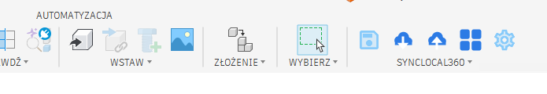
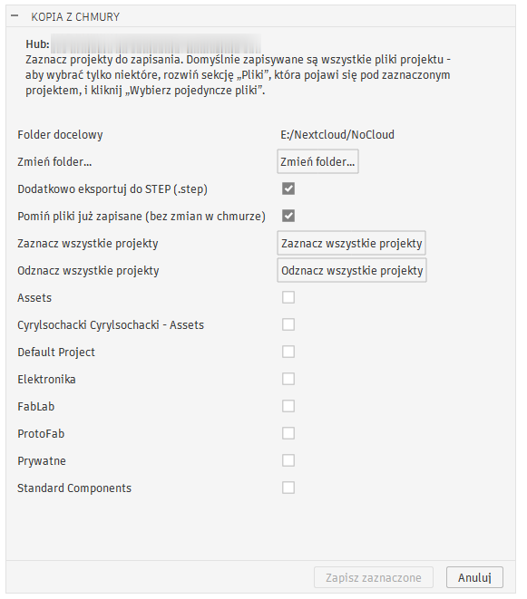
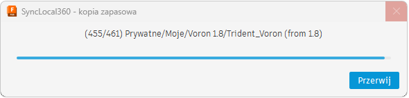
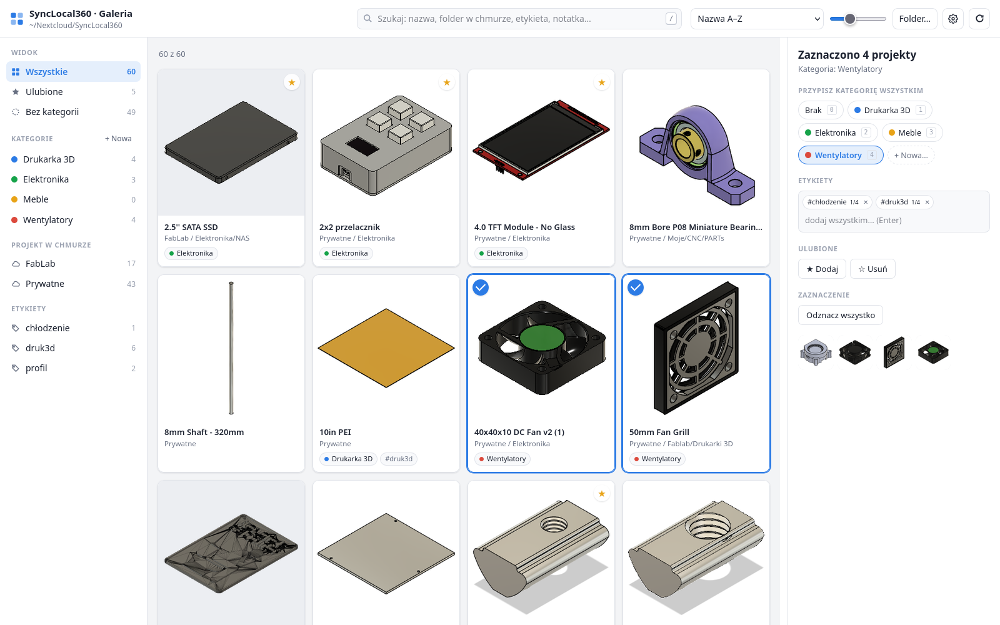
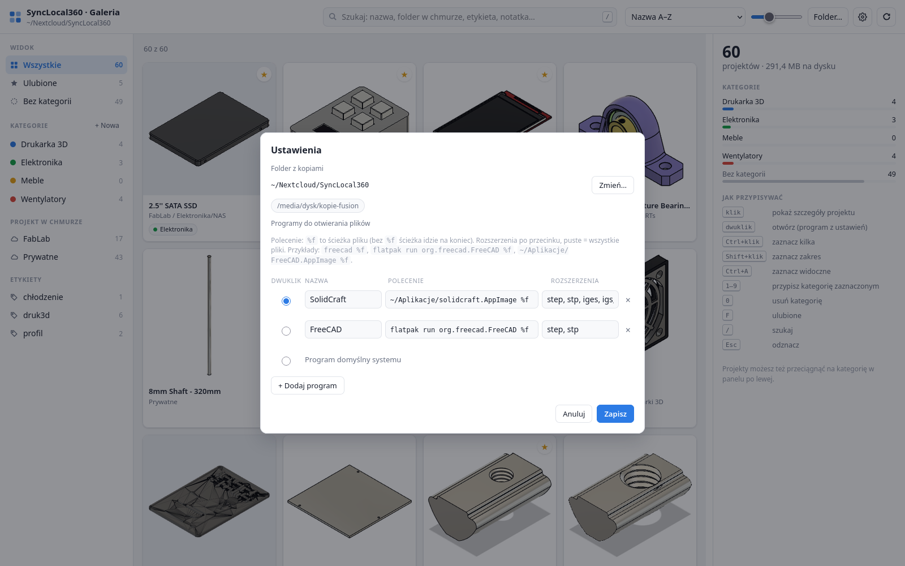
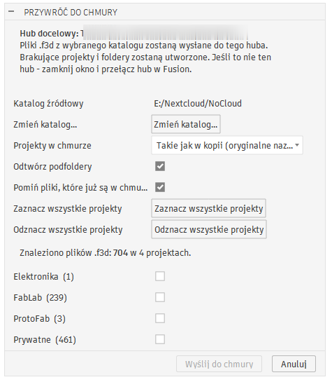
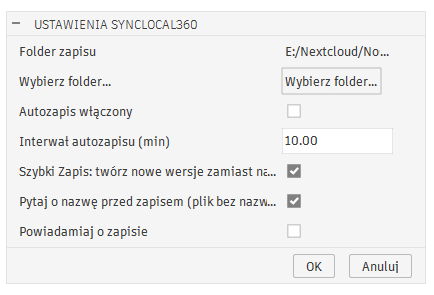

SyncLocal360 pobiera całą bazę projektów z chmury Fusion na Twój dysk
– pliki .f3d, .step i miniatury – a potem pozwala ją przeglądać,
porządkować i otwierać w programach dostępnych na Linuksie.
Darmowe i otwarte. Dane zostają w zwykłych plikach na Twoim dysku.
.f3d.config.json. Synchronizujesz je czym chcesz: Nextcloud, Syncthing, dysk USB.Pobieranie odbywa się w Fusion (Windows lub macOS), a pracujesz już na Linuksie – na tych samych plikach.
Zainstaluj dodatek w Fusion. Na karcie Bryła pojawi się panel SyncLocal360. Kliknij Kopia z chmury, zaznacz projekty i włącz eksport do STEP.



Folder z kopiami to zwykłe pliki. Ustaw go w folderze synchronizowanym z Linuksem albo po prostu skopiuj na dysk.
Uruchom Galerię (AppImage) i wskaż folder. Szukaj, porządkuj w kategorie, a dwuklikiem otwieraj STEP w wybranym programie – FreeCAD, SolidCraft lub innym.
Dodatek pobiera i zapisuje, galeria porządkuje i otwiera. Oba widzą te same kategorie i notatki.
.step obok każdego .f3d – do otwarcia w innych programach CAD.

Na komputerze z Fusion przycisk Galeria otwiera tę samą galerię w przeglądarce – z przyciskami Otwórz w Fusion i Wstaw do projektu. Kategorie są wspólne z Linuksem.


Uczciwie o tym, czego narzędzie nie zrobi – żeby nic Cię nie zaskoczyło po przejściu na Linuksa.
.f3d otworzy tylko Fusion. Na Linuksie pracujesz na .step..f3d na wypadek powrotu..f3d). Rysunki .f2d i pliki elektroniki są pomijane.Obie części są w zakładce Releases na GitHubie.
SyncLocal360_<wersja>.zipSyncLocal360 Galeria_<wersja>_amd64.AppImagechmod +x SyncLocal360*.AppImage ./SyncLocal360*.AppImage
| FreeCAD (Flatpak) | flatpak run org.freecad.FreeCAD %f |
| Dowolny AppImage | ~/Aplikacje/Program.AppImage %f |
Każdy plik jest otwierany i eksportowany przez Fusion, więc zależy to od wielkości modeli. Przykładowo ok. 700 plików (ok. 11 GB razem ze STEP) zajęło kilka godzin.
Uruchom Fusion ponownie i puść kopię jeszcze raz z zaznaczonym „Pomiń pliki już zapisane”. Każdy plik zapisuje się od razu, więc nic nie przepada, a kopia dokończy tylko brakujące pliki.
Pliki .step otworzy m.in. FreeCAD i SolidCraft. Galeria pozwala dodać dowolny
program przez polecenie z %f i wybrać, który uruchamia się po dwukliku.
Tak. Plik .f3d zawiera cały projekt z historią. „Przywróć do chmury” wgra kopie
z powrotem – także na inne konto.
W pliku config.json każdego projektu, a lista kategorii w synclocal_gallery.json
w folderze kopii. Dzięki temu galeria w Fusion i na Linuksie widzą to samo.